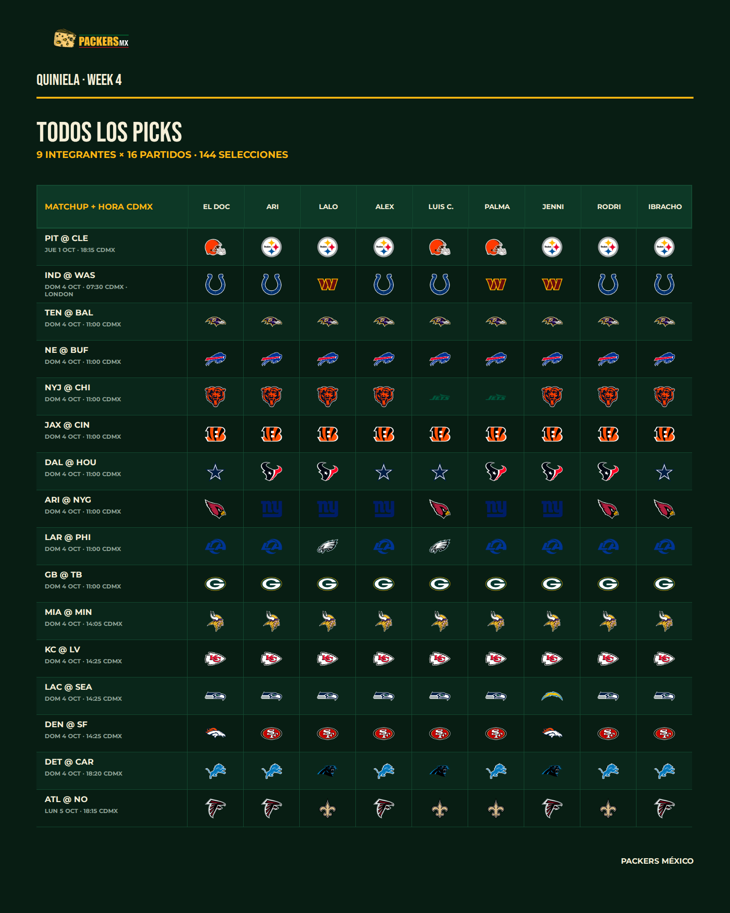
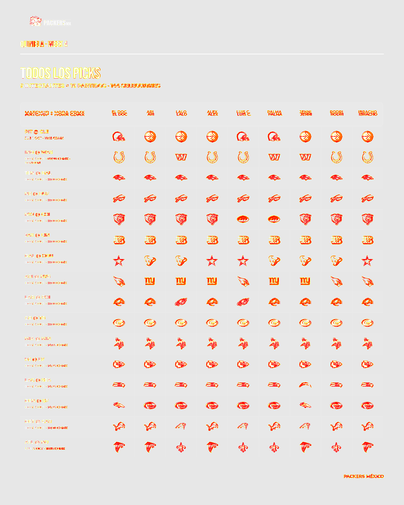

PMX · QUINIELA RENDERER · TEST
W4 · REVISIÓN DE PARIDAD
Esta página es únicamente para revisión de Dirección. El renderer todavía no está habilitado para producción ni dispara notificaciones a Rodrigo.
1600×2000DIMENSIÓN EXACTA
144/144PICKS RENDERIZADOS
97.40%SIMILITUD PIXEL QA
CANDIDATO
RENDERER TEST
DIRECTION VISUAL REVIEW REQUIRED
MASTER
FIGMA GOLDEN

QA
PIXEL DIFF

Criterio de Dirección: si la diferencia visual afecta identidad, jerarquía, logos, legibilidad, proporción o percepción general, marcar HOLD y corregir. Si el candidato conserva la experiencia visual aprobada, Dirección puede marcar PASS para continuar a la fase de automatización W5.